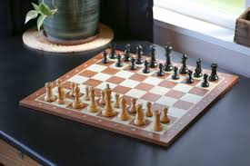

David Liu
Welcome to my website!
About Me
Hello, I'm David Liu. I am an 11th grader at Canyon Crest Academy in San Diego. I was born in Chandler, Arizona, and lived there mostly until I moved to San Diego in 3rd grade. My favorite subject in school is math because I enjoy solving problems. Outside of school, some hobbies include basketball, chess, scootering, and working out. Some adjectives to describe myself would be smart, lighthearted, and nice. 
Basketball
My favorite sport is basketball, which I consider a large part of my life. I find basketball special because the objective is straightforward: to get the basketball in the hoop, allowing everyone to understand and play. However, it still requires a lot of work to improve your skills, and many aspects of basketball are more challenging than people think. I am proud to play basketball at CCA and have made many friends and learned from many coaches. My favorite NBA team is the Golden State Warriors, and I enjoyed watching them win many championships growing up.
Chess
Another one of my favorite hobbies is playing chess. Chess is important because it develops many skills that apply to other aspects of life. For example, slow chess trains critical thinking and patience, while fast chess trains quick decision-making under pressure. My passion for chess started when I was 5 years old, learning the rules and playing casually against my Dad. Throughout my childhood, I played tournaments and got my rating up to 1900. Today, I do not play competitively anymore, but I am a co-president of the CCA Chess Club. 